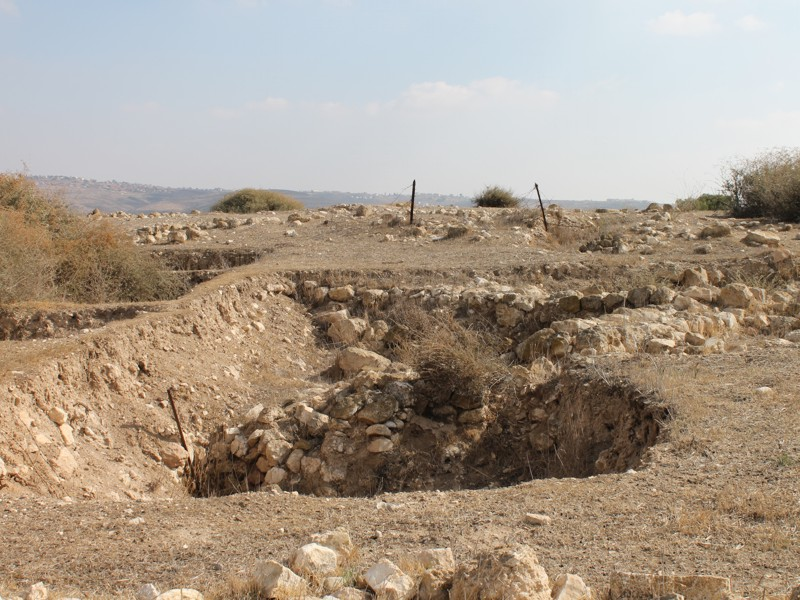

При Исходе евреи взяли Египет с собой?
Попытки связать находки с Исходом не представляются бесспорными, поскольку точно определить хронологию этого важнейшего события еврейской истории пока не удалось. Согласно различным версиям, датировка библейского Исхода колеблется между XV и XII веками до нашей эры.

Вывести евреев из Египта оказалось проще, чем Египет из евреев
источник newsru.co.il

Керамические артефакты, обнаруженные под Беэр-Шевой Керамические артефакты, обнаруженные под Беэр-Шевой Сотрудники Управления по борьбе с хищениями древностей обнаружили в районе кургана Тель-Халиф, расположенного рядом с киббуцем Лаав, в 20 километрах к северу от Беэр-Шевы, пещеру, ставшую добычей черных археологов. Особый интерес преступников привлек культурный слой, относящийся к концу второго тысячелетия до новой эры, остальные слои были ими разрушены. Археологи решили начать раскопки, чтобы спасти историческое наследие от разграбления. В ходе работ выяснилось, что на этом месте около 3.400 лет назад находилось египетское административное здание. Нашли они и другие свидетельства египетского присутствия в Эрец-Исраэль в период поздней бронзы. Специалисты обнаружили около 300 керамических артефактов, датируемых периодом поздней бронзы (второе тысячелетие до н.э) и ранним железным веком (конец второго тысячелетия – середина первого тысячелетия до н.э.). В большинстве случаев речь идет о фрагментах, но часть предметов сохранились полностью. В пещере также найдены предметы обихода, культа и украшения, изготовленные из бронзы, фаянса и ракушек, косметические принадлежности, а также перстни-печати египетского образца. Как предполагается, их собирали здесь несколько десятков лет.

"Большая часть находок типична для еврейской культуры южной части Израиля. Но десятки каменных перстней, выполненных в форме жука-скарабея и украшенных характерным для Египта орнаментом. А ведь в позднюю бронзу здесь владычествовали египтяне", – говорит глава отдела по борьбе с хищениями Амир Ганор.

Основная часть перстней с печатями-скарабеями датируется XIV-XV веками до н.э. Надписи на них свидетельствуют, что они относятся к периоду правления фараонов Тутмоса Третьего, правившего в 1504-1450 годах, и Аменхотепа Третьего (1386-1349 гг). Еще на одном перстне вырезан бог Птах, особо почитавшийся в Мемфисе. Найдены также бронзовые фигурки богов и амулеты, характерные для египетской культуры. Ученые связывают это с тем, что евреи и после исхода из Египта оставались под египетским культурным влиянием. "Вывести евреев из Египта оказалось проще, чем Египет из евреев", – отмечает Ганор.

"В период поздней бронзы Египет был могущественной империей, и его превосходство признавалось соседними странами. Владычество страны фараонов иногда было военно-политическим, а иногда – только культурным. Египетские традиции повлияли и на культуру еврейских жителей Ханаана", – продолжает он.

Отметим, что попытки связать находки с Исходом не представляются бесспорными, поскольку точно определить хронологию этого важнейшего события еврейской истории пока не удалось. Согласно различным версиям, датировка библейского Исхода колеблется между XV и XII веками до нашей эры.